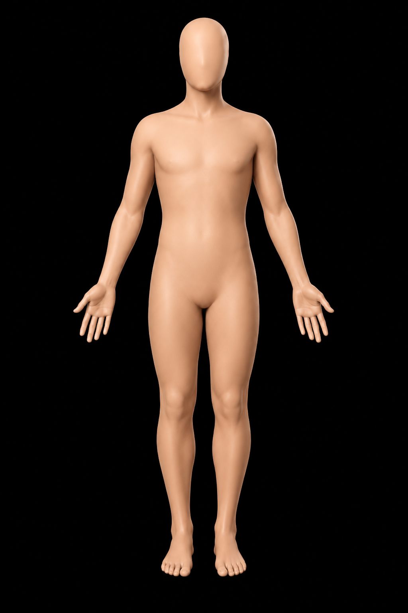
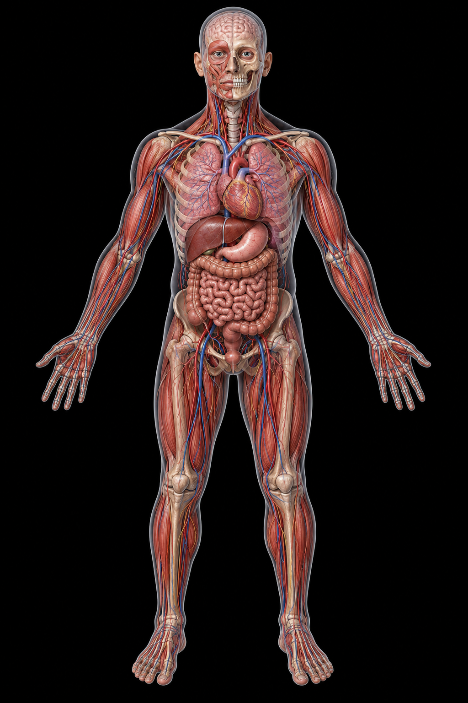
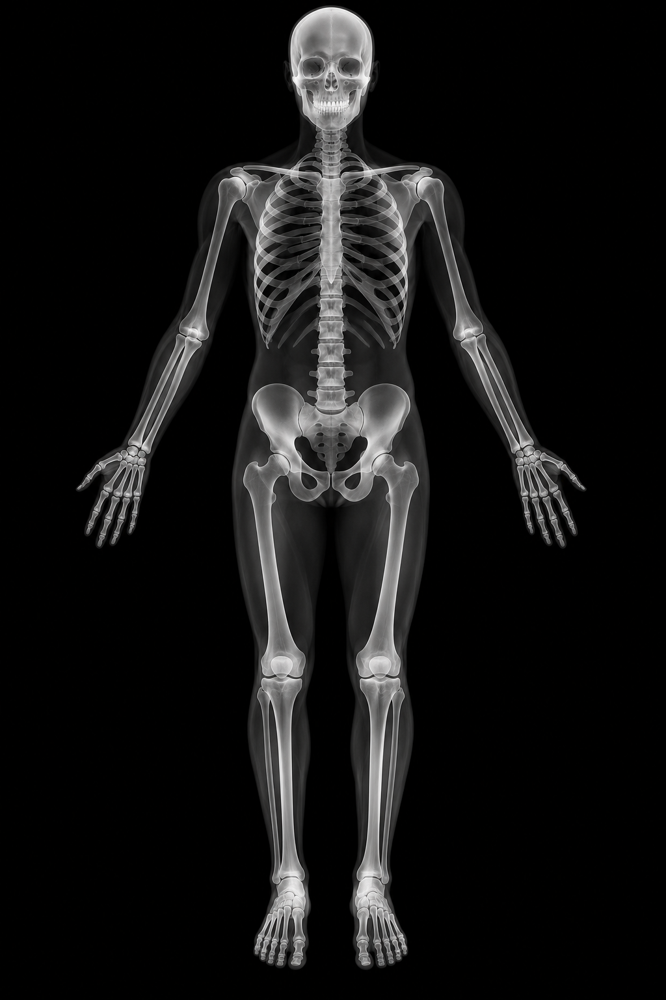
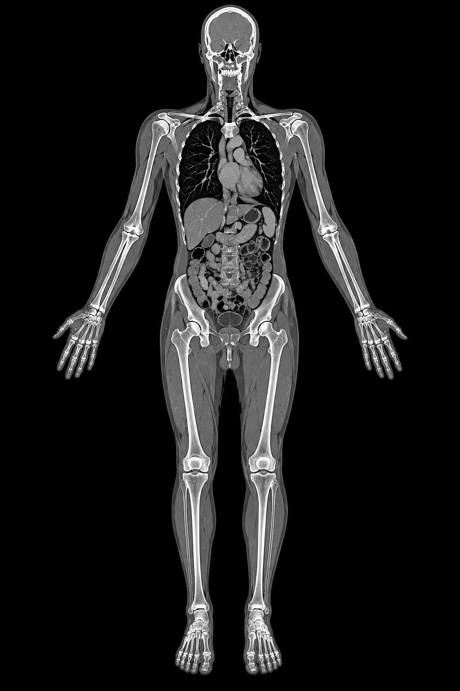
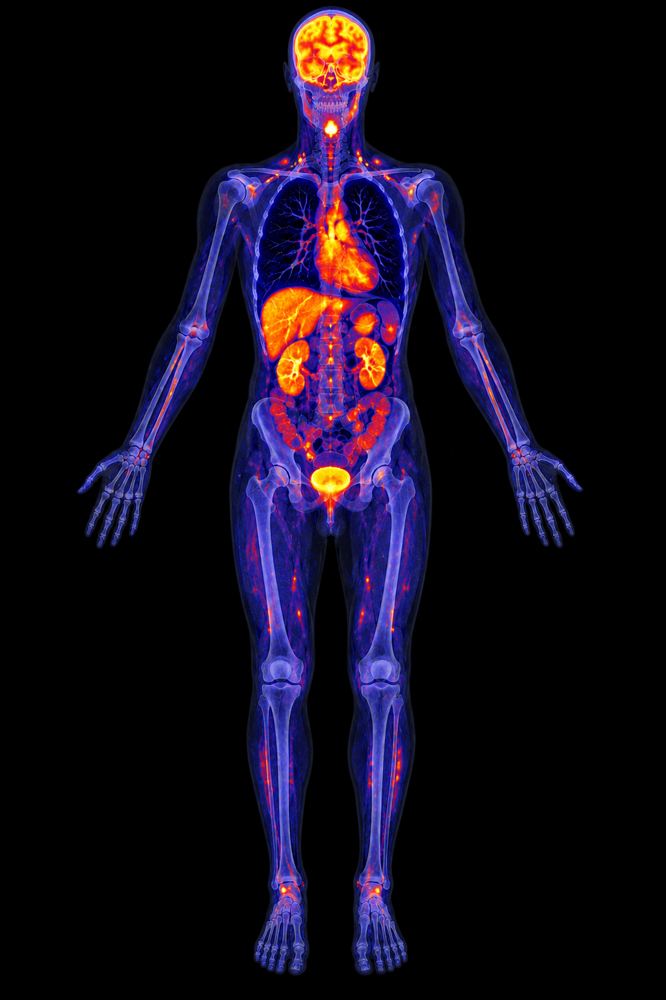
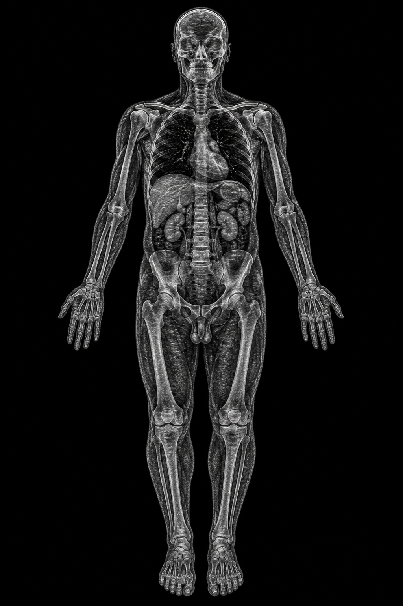

شاهد ما وراء الصورةSee Beyond the Image تعلّم التشريح الإشعاعي بذكاءLearn Radiologic Anatomy Intelligently
منصّة تعليمية ذكية تجمع أطلساً تشريحياً تفاعلياً، ومقارنة متعدّدة الوسائط، ورؤى مدعومة بالذكاء الاصطناعي — عبر الأشعة السينية · CT · MRI · الموجات فوق الصوتية · PET/CT. An intelligent educational platform combining an interactive anatomy atlas, multimodality comparison, and AI-supported insights across X-ray · CT · MRI · ultrasound · PET/CT.
رؤى ذكيةSmart Insights
ملخصات وتحليلات فورية مدعومة بالذكاء الاصطناعي عبر المودالتي.AI-powered insights and contextual explanations across modalities.
تعلّم تكيّفيAdaptive Learning
مسارات تعلّم شخصية تتكيّف مع مستواك واهتماماتك.Personalized learning paths that adapt to your progress and goals.
محتوى موثوقTrusted Content
مراجع علمية من خبراء ومصادر دولية معتمدة، محدّثة دائماً.Curated by radiology experts. Evidence-based and always up to date.






